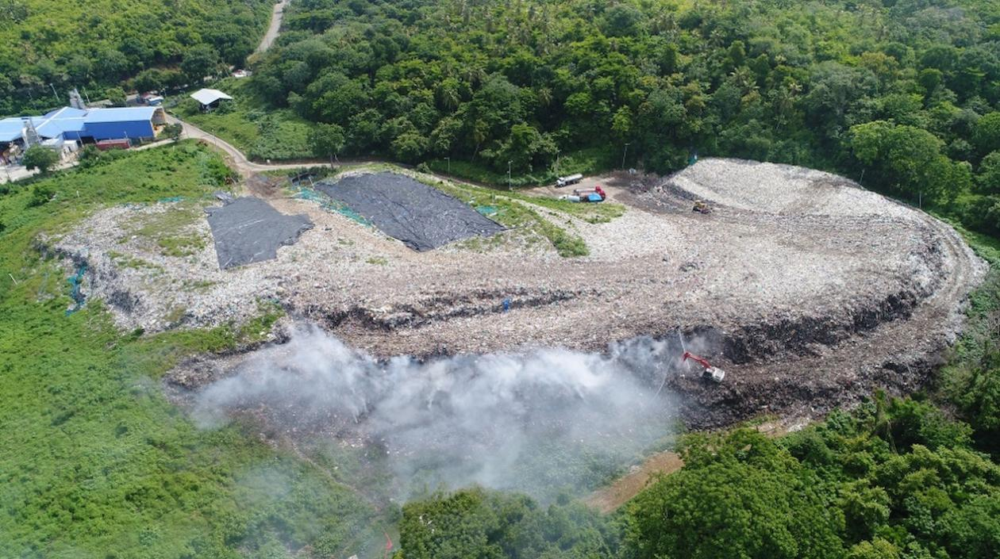
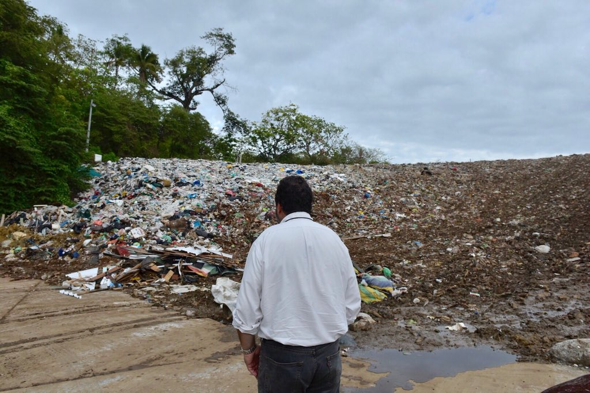
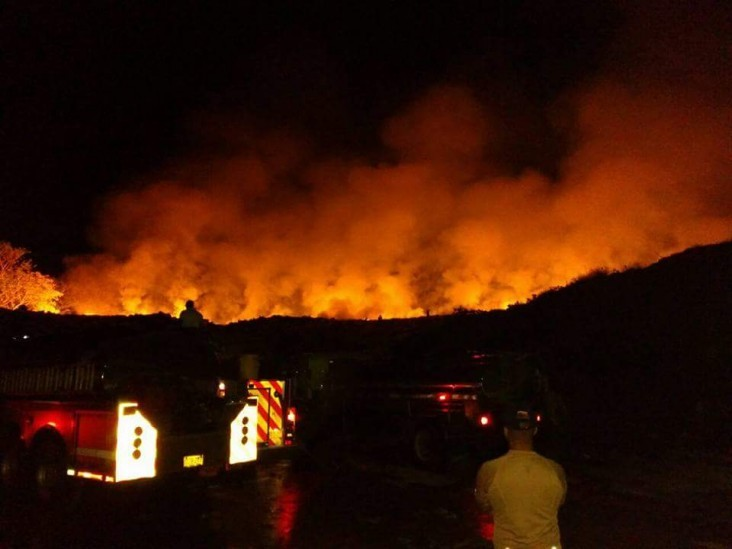

En esta isla tan hermosa, con agua color turquesa y cientos de sitios a los que visitar se encuentra escondido el “Magic Garden” que aunque suena como una atracción turística, no puede estar mas alejado de la realidad, este es el vertedero de la isla el cual a contaminado todos sus al rededores y ha crecido progresivamente hasta el punto en que algunos dicen que es una “bomba de tiempo”

Arigan vive a diez minutos del 'Magic Garden' con su madre y sus hermanos, que denuncian desde hace años sus efectos nocivos en el vecindario. "Es una bomba de tiempo", comenta en el zaguán de su vivienda la madre de Lizeth, Rosaina Forbes.
La prensa local viene informando desde hace años de los incendios en el vertedero: "A veces eso prende y suelta unos humos muy fuertes, cuando eso pasa reubican a algunos vecinos unos días en albergues en otras partes de la isla por los problemas respiratorios".
La mujer explica que además se ha encontrado en la casa "con ratas gigantes, con moscas y mosquitos que vienen de allá" y alerta de un aumento de enfermedades: "a mí hace unos meses me salieron unos brotes en la piel, se me infectó, pero los niños sufren de fiebres, infecciones..."

En el año 2002 la Defensoría del Pueblo emitió una resolución sobre el 'Magic Garden' en la que alertaba de "la falta de voluntad política, local y departamental, para lograr una gestión ambiental que permita restablecer y mantener el equilibrio ecológico de la isla de San Andrés".
Una de las medidas tomadas para solucionar el problema fue la adquisición en 2011 de una costosa planta de generación de energía a partir de la incineración de los residuos sólidos del 'Magic Garden' que sin embargo está inactiva desde entonces, dijo Hudgson. Mientras tanto, las autoridades tensan la vida útil del vertedero que, según la Secretaría de Servicios Públicos del archipiélago, se proyecta "en unos tres años" gracias a "nuevos diseños y modificaciones".
